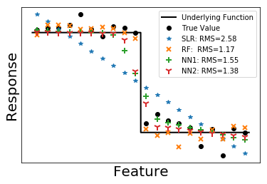
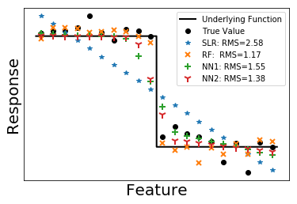

Machine Learning in Condensed Matter Physics
Nowadays almost every place is using machine learning (ML). Machine learning is a type of artificial intelligence (AI). It gives computers the ability to learn without being explicitly programmed. Specifically, after "training", a machine should be able to output prediction Y given input X. The training can be either supervised or unsupervised; and Y is a function with X as variables. Both X and Y are vectors in general.
Supervised learning, as the name indicated, is to teach the machine with examples. In this case, both X and Y are given to the machine for training. On the other hand, unsupervised learning is letting the machine explore by itself. Only X is given to the machine during training. The machine needs to discover patterns or structures in the input data.
How can we apply machine learning in condensed matter physics (CMP)? One important problem in condensed matter is to characterize different phases of matter. Classical phase transitions associated with symmetry breaking can be classified by local order parameters. In numerical studies, it is sometimes not easy to calculate the order parameters directly. In such cases, machine learning may give us a hand.
With supervised learning, we might be able to do automation or solve one type of classification problem. Our hope is to (1) train the machine with some easily solvable systems and apply it to systems that are hard to solve. (2) be able to extract order parameters from the machine after training.
With unsupervised learning, we hope the machine can tell us if the two states are in the same phase. However, we may need a lot of prior knowledge of the system to do this. Think about support vector machine (SVM). We can use the kernel trick to do non-linear classification. What kind of kernel to use is highly subjective and depends on the problem.
Another direction of applying ML in CMP is representing physics state with neural networks. It hardly uses existing ML methods, but developing new algorithms. We will not talk about this direction in this post. Maybe we will start another post on this :).
We will not talk about the details of machine learning algorithms in this post, but only applications. The python package scikit-learn is used for machine learning. In this post we will also compare different machine learning methods.
Fitting 1D functions
Let's start from the simplest case: fitting functions with only one variable. We want to do this first because we can generate data all by ourselves. Thus, we can know the underlying true function and we can know the performance of different models. Second, it is easy to visualize 1D functions in a 2D plane. We can get a sense of what these models are doing.
There are two purposes to do function fitting. One is interpreting the data using some simple functions like linear function. The other is smoothing the data and getting an empirical function. These two purposes are contradictory. We always want a simple function for easy interpretation, while a complex function can better fit the data. In machine learning, we care more about fitting than interpreting.
Here we use four models to do the fitting: simple linear regression (SLR), random forest (RF) and neural networks (NN). We use feed-forward neural network with one (NN1) and two (NN2) hidden layers. The first hidden layer has 100 neurons and the second 20 neurons. We use rectifier as activation function for hidden layers.
We test on functions that are smooth, having discontinuity and having singularity. We generate 500 training data sets and 100 testing data sets. In the following figures, we plot 20 data sets among the testing data. The underlying function that generates the data are plotted as solid black lines. True value of the data are plotted as black dots. In the legend, we also presents the root mean square (RMS) calculated from the 100 testing data. Note that the standard deviation of the error is set as one when we generate the data.
 


Among the four methods, random forest always gives a close predict no matter what underlying functions are. It is easy to under stand, as random forest generates functions that are almost piece wise constant. Such kind of functions can capture most features of a curve. Although random forest gives better predictions, it is not easy to interpret the model.
I guess everybody is familiar with linear regression. It only gives the overall trend of data. From another perspective, SLR can be viewed as feed-forward neural network with no hidden layers. Adding hidden layers in NN is effectively perturb the linear regression line towards the true curve. As we can see from the figures, NN1 performs a little bit better than SLR while NN2 is a little bit better than NN1. Note that with a small number of hidden layers, neural network can only capture the main feature of the data.
Note that the predictions given by random forest is more "random" than by other methods. We cannot give an explicit function to represent the model trained by RF. However, we can explicit write done analytic formulas for other methods (though some are very complicated). The training is more like finding best parameters for those functions.
1D classification
In machine learning, we sometimes need to make predictions on categorical variables, i.e. classification problem. It is similar to fitting step functions with numerical response. However, we've seen that linear regression cannot fit the step function properly. A better way is to transform the fitted value by sigmoid functions. It's a group of S-shaped functions mapping from [-∞,∞] to [0,1]. The most commonly used sigmoid in this problem is the logistic function. There, we come to logistic regression.
Again, we fit the classification problem using the four methods. The error calculated by cross entropy is listed in the legend. The black solid line is the probability in Bernoulli distribution used to generate data. We plot the predicted probability as scatters.
As can be seen in the figures, neural networks can better fit the underlying probability function f. Linear regression fits well when there is a clear trend in f, while random forest performs worst among the four models.
Machine learning phase transition in classical Ising model
After some practice in 1D problems, let's do a real physics problem. Classical Ising model can model magnet in a simple and straightforward way. The model assumes that there are mini magnets located at vortices of a square lattice. We call them spins σ. To make the problem even simpler, the spins are assumed to only have two directions. Mathematically, σ={±1}. The total magnetization of the material is just the sum of all σ.
The spins only interact with the nearest spins. The energy of interaction is assumed to be Eij=-σi σj. The system always wants to lower its energy, so such interaction favors a state with all σ having the same value i.e. parallel spin configuration. However, this only happens at zero temperature. At finite temperature, thermal flotation will flip the spin. As long as the total magnetization is non-zero, the material is said to be in a ferromagnetic phase. When temperature is high enough, the parallel structure is completely destroyed. The total magnetization becomes zero. Then the material becomes paramagnet.
Now the problem is what is the temperature that separate the two phases? We plot the averaged magnetization of a 2D square lattice model in the following figure. The black dash line is the theoretical transition point. As we can see, by calculating the magnetization we can easily separate the two phases.

Supervised learning
Suppose we do not know the actual transition point, can we use machine learning to determine the transition point? We know that when temperature is low the system must be in the ferromagnetic phase (labeled as 1), while at high temperature the system is paramagnetic (labeled as 0). We generate some states at low temperature and label them as 1 and generate states labeled as 0 at high temperature. Using these generated spin configuration to train a neural network with two hidden layers, we get the predicted probability of being in ferromagnetic phase as shown below on the left


The blue dots are predicted probability and yellow stars are magnetization of corresponding test data. The black dash line is again the theoretical transition point. The training data are generated in the temperature range in the green shade. From the figure, it seems machine learning can indeed predict the transition point accurately. Some test states at low temperature have small magnetization because the Monte Carlo simulation is trapped in a local minimum. It's a numerical artificial effect and appears randomly. It can be somewhat avoided by annealing procedure, but we didn't want to make the code too complicated as long as the final result is not affected.
Note that we did a trick there. The transition point is exactly in the center of the untrained temperature area. What if we shift the training temperature? Then we get the second figure above. The predicted transition point is still consistent with the theoretical value, which is quite amazing.
Confusion scheme
Sometimes, we do not even know whether there is a phase transition within the parameter range. We may try to do something called confusion scheme. The idea is quite simple. When we do not know the exact phase transition point, we guess a value and do training and testing according to this value. It the value we guessed is close to the true transition temperature, the testing error will be small and accuracy will be close to one. We try several different transition point within a parameter range. The error should be a local minimum when the trial point is the true transition point.

In this problem, transition temperature Tc=2.27. We plot the testing error and accuracy verses trial transition point in the following. In the left figure, the true transition point is within the parameter range while not in the figure on the right. Errors near the edges are always small because we can always predict the majority class to get a low error.
As we can see in the figures, when the true transition point is among the trial points the testing error has local minimum other than edges. when the true transition point is not included, the testing error only has local minimums at the edges.
Unsupervised learning
Using confusion scheme, we still need to have some knowledge of the system. Can we separate the ground states only from their spin configuration? First we use principal component analysis (PCA) to do dimension reduction and plot the data in 2D plane.


As can be seen in the figure, the data are clearly clustered into three groups. We use K-means clustering to classify the states using three groups. The center of clusters are marked as red stars. The plot is consistent with our expectation. However, the prediction made by the trained model is random. I am confused here.
In this post, we applied machine learning to a simple physics problem. Note that, the order parameter is a linear combination of the spin configurations. Because of the simplicity of the problem, we get quite neat results even using basic machine learning techniques.
References
- Carrasquilla, Juan, and Roger G. Melko. "Machine learning phases of matter." Nature Physics (2017).
- van Nieuwenburg, Evert PL, Ye-Hua Liu, and Sebastian D. Huber. "Learning phase transitions by confusion." Nature Physics 13.5 (2017): 435-439